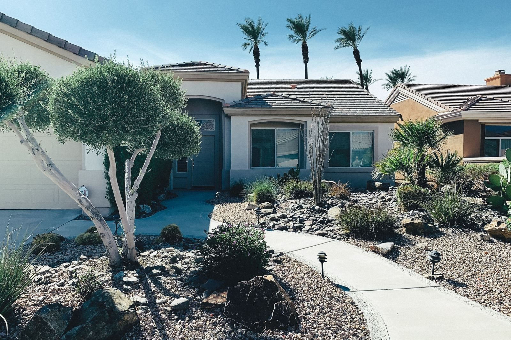
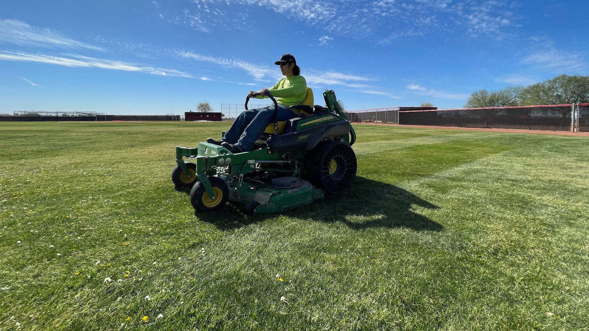
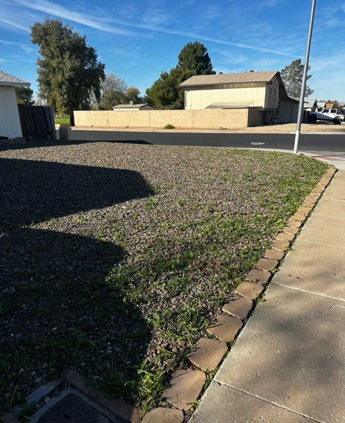
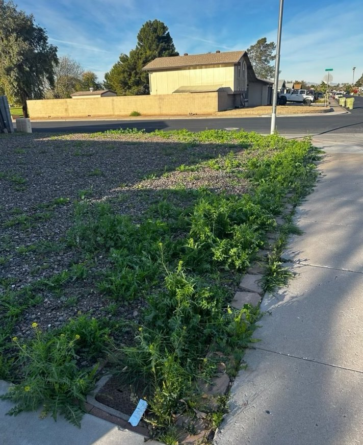
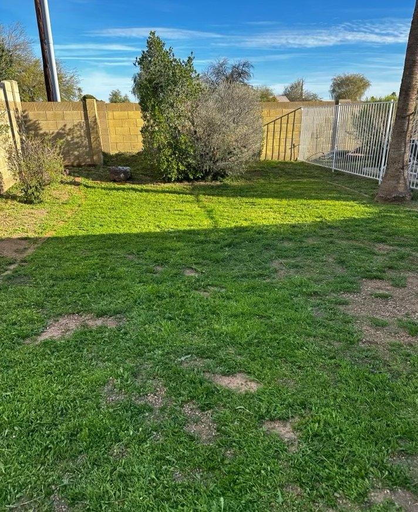
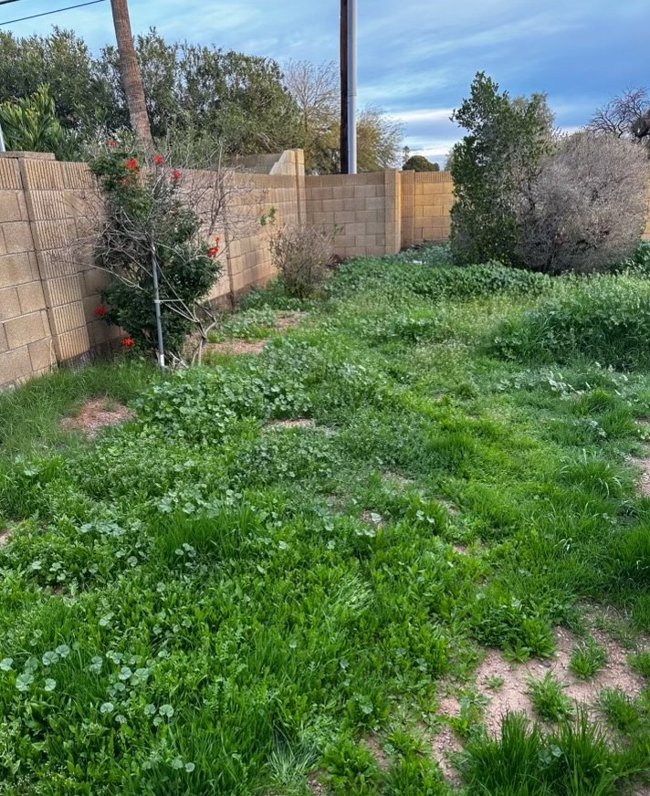
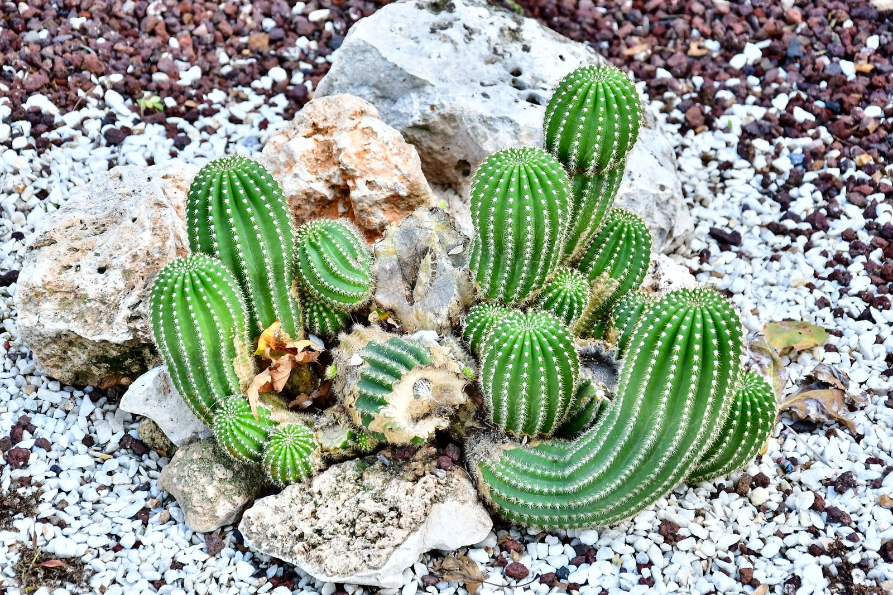
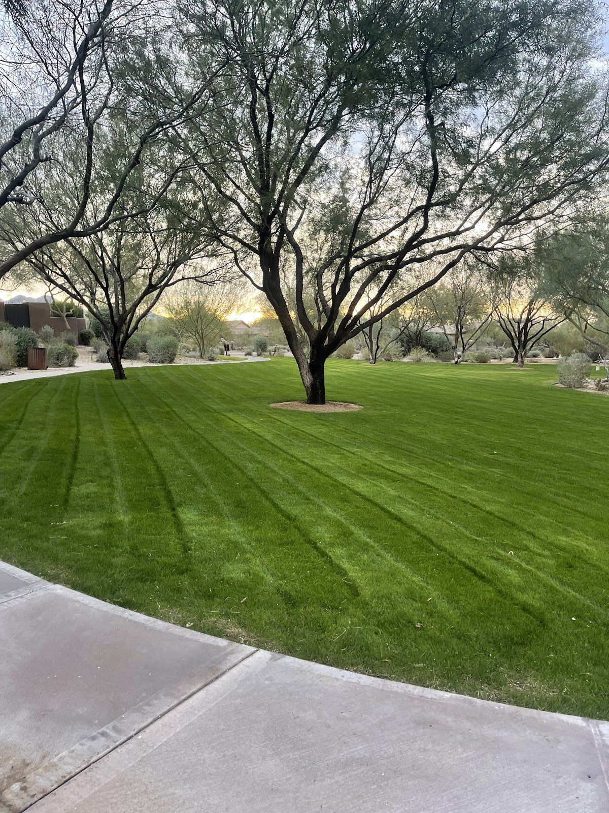
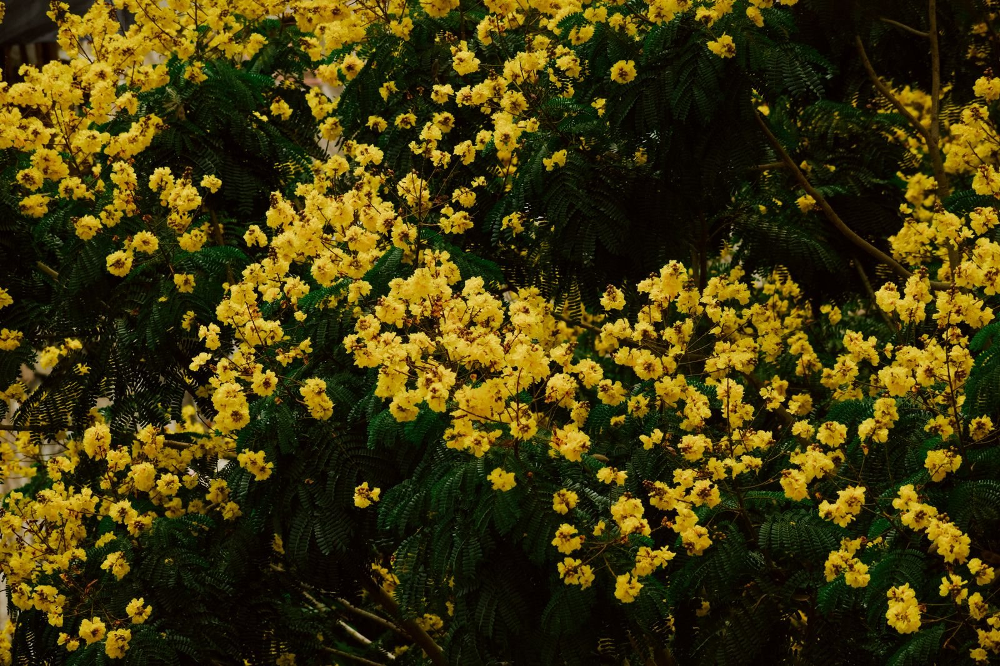

Plate IVFig. 4 · illustrative
Landscape design
Hortus deliberatus
A plan for the whole yard before anything goes in the ground: where gravel, plants, paths and lawn belong, drawn around how you actually use the space.
A field guide to a Phoenix yard · contents

Fig. 1On the mower, mid-stripe. Phoenix, AZ.Their own photo
Plate IA field guide to the Phoenix yard
Landscape design, desert landscaping, lawn mowing, yard clean-ups and succulent planting for Phoenix yards. Send a few photos on WhatsApp and we’ll talk it through.
Plates II & III · field records
Both pairs are from their own phone. Drag the line across each plate: the left side is how the yard was, the right side is how it was left.


Habitat: gravel strip by the sidewalk. Found: weeds through the rock and over the edging. Left: clean gravel, a crisp border.


Habitat: backyard, block wall. Found: knee-high overgrowth. Left: one even lawn, wall to wall.
Plates IV–VIII · the specimen index
Everything we do, catalogued the way an old desert field guide would: numbered, labelled, and pinned to the page. Not sure which one you need? Send a photo.

Plate IVFig. 4 · illustrative
Hortus deliberatus
A plan for the whole yard before anything goes in the ground: where gravel, plants, paths and lawn belong, drawn around how you actually use the space.

Plate VFig. 5 · illustrative
Xeriscapus sonorensis
Thirsty ground swapped for rock, gravel and desert plants that belong in Phoenix, laid out so the yard looks finished from the street.
Plate VIIFig. 7 · their photo
Purgatio horti
Weeds pulled, overgrowth cut back, beds and gravel tidied and the mess hauled off. Plates II and III show two of them.
Plate VIIIFig. 8 · illustrative
Succulenta plantata
Succulents and desert plants set into new or existing beds, spaced so each one has room to grow into its shape.

Plate VI Lawn mowing & care
Lawn mowing and care sits right next to the desert work. Regular cuts, clean edges along walks and borders, and the kind of stripes you can see in their photos, from the open field in Plate I to this one under the mesquites.
Plate IX Range & habitat
Arizona · 85032 · and nearby
Desert yards and lawns across Phoenix. If you can see Camelback from your street, you’re in the right field guide.
Plate X Collection request

Plate XI Field notes
Yes. Desert landscaping and xeriscape is one of the things we do. Send us photos of the lawn you want to replace and tell us how you use the yard, and we will talk through gravel, rock and plant options with you.
It depends on the plants, how much sun they get and how settled they are, so no single schedule fits every yard. Tell us what is planted and we can talk it through when we look at your photos.
Yard clean-ups are one of our services. After a storm that can mean clearing fallen branches, leaves and debris and tidying the gravel and beds. Send a photo of the mess so we can see what is there.
A few wide daylight photos of the area from different corners, plus a line on what you want done. The form on this page drops your answers into a WhatsApp message to (480) 433-5704; attach the photos in the chat.
Both. Lawn mowing and care sits on our list next to desert landscaping. The striped lawns in Plates I and VI are from our own photos.